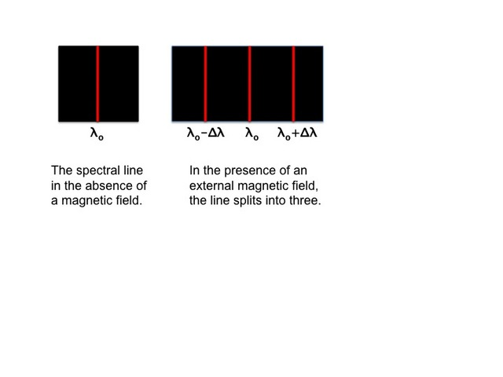

The Zeeman effect describes the splitting of spectral lines in the presence of a magnetic field. In the absence of a magnetic field, emission is observed as a single spectral line and is dependent only on the principal quantum numbers of the initial and final states. In the presence of an external magnetic field, the principal quantum number of each state is split into different substates, resulting in permitted transitions that have frequencies above and below the transition that results in the absence of a magnetic field. The degree of the splitting depends on the field strength. Therefore, astronomical observations of the Zeeman effect can provide important information on the magnetic field strengths in cosmic objects.
An example of this is the splitting displayed by OH masers in evolved stars and star-forming regions, observations of the former of which have been used to measure field strengths of order a few milliGauss.
